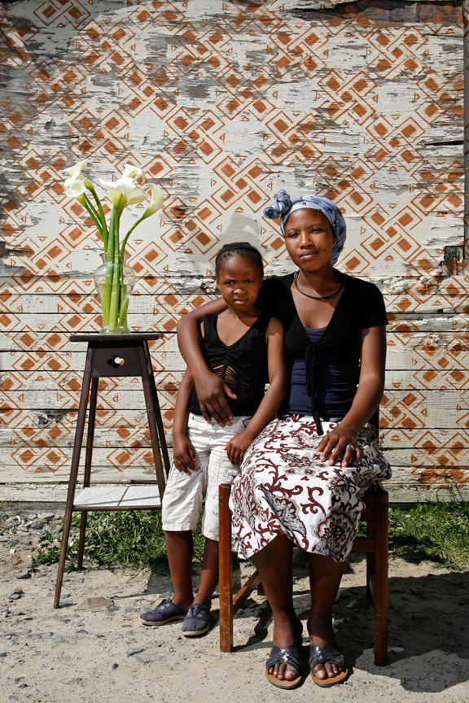

Our network
We oppose all forms of armed conflict.


"I began creating artwork while being held as a political prisoner in Burma". 2014 Artraker Award Winner San Zaw Htway (Myanmar).
- 
"The award has been transformative to my work as it afforded me the support to help me take my Street Studio project to a IDP (Internally Displaced Persons) camp in the Eastern DR Congo where I photographed and printed family portraits for over 800 people in the camp who had fled their homes and lives to escape violent fighting over a year before". 2013 Artraker Award Winner Alexia Webster (South Africa).
"Art plays a fundamental role in my work on violent conflict. It opens for new understanding, raises different questions, and reveals other ways of transforming social relationships. The Artraker Fund (now Foundation) is an acknowledgement of this, meets the need to support art and conflict, and serves as a platform to ensure the sharing continues." David Nyheim, CEO of INCAS Consulting and co-founder of Artraker.
-
keep up to date with our twitter feed
Tweets by @ArtrakerCIC